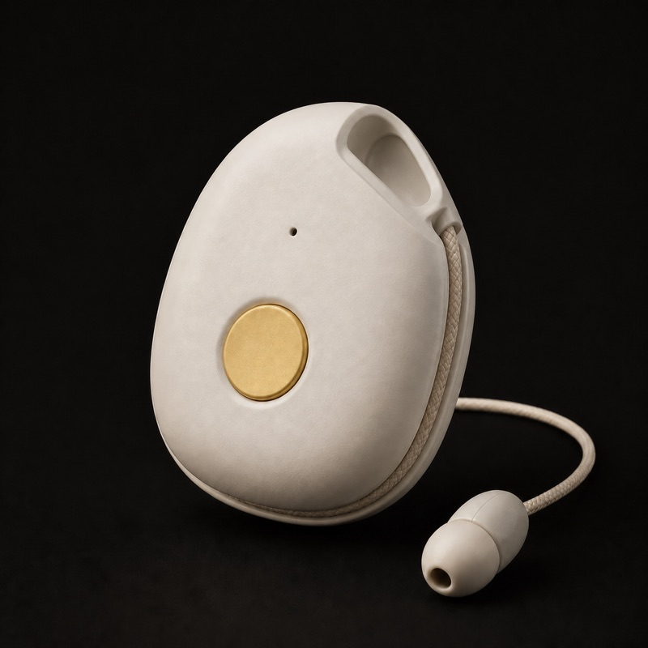
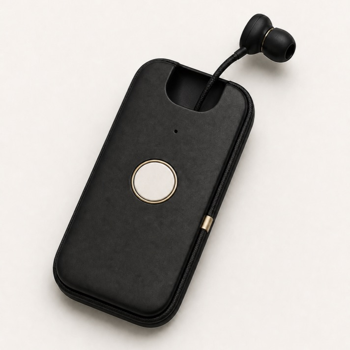
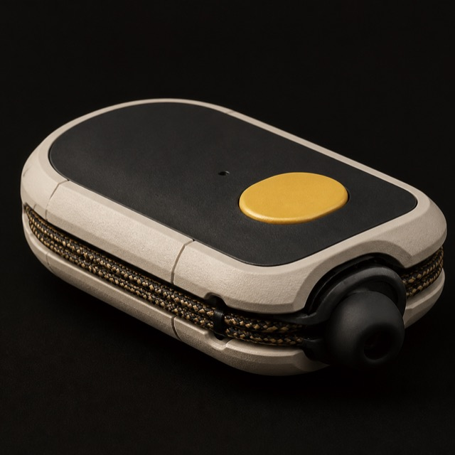
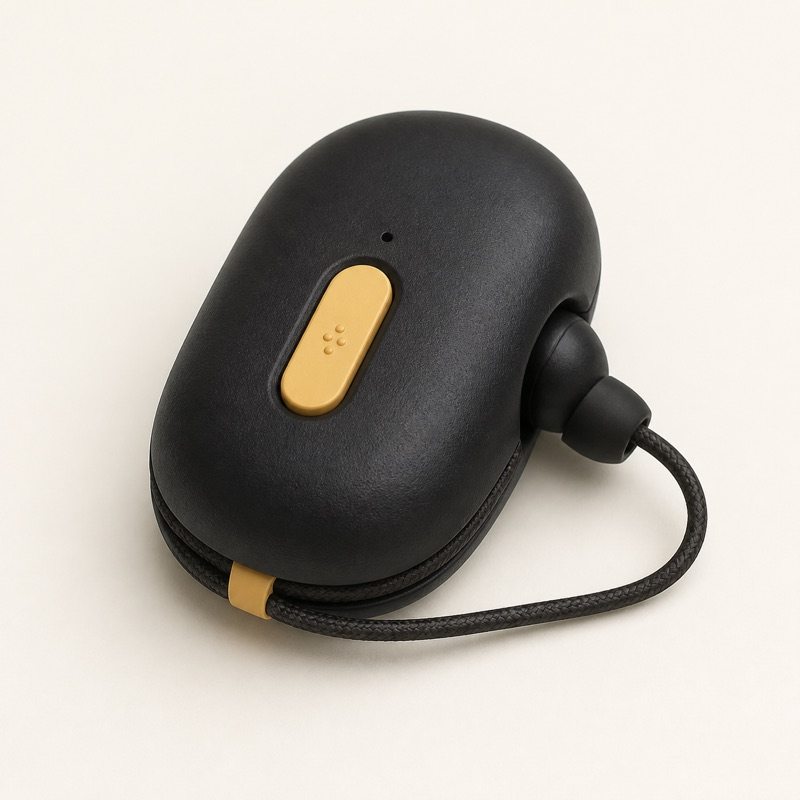

Ana - It's for girls!
Ask. Nurture. Aspire.




Overview
Ana is a private, offline AI thinking companion designed first for girls who have the least access to capable technology.
Guiding question
How do we put a trustworthy thinking companion into the hands of every girl, regardless of whether she has internet access?
Core proposition
- Designed first for girls with limited access to technology.
- Personally owned rather than shared with a household or classroom.
- Usable wherever she is, including places with limited connectivity.
- Private by design, with local processing, local memory, and one-to-one audio.
- Intended to build agency, curiosity, judgment, and confidence rather than simply provide answers.
Current stage
Early discovery and prototype definition. The next priority is to validate the problem with educators and girls before locking the product design.
Vision
In some households where capable technology is scarce, the best device may remain with adults. Children may receive older or less capable devices, and girls may have the least access or none at all.
If confirmed through field research, this is another obstacle to education. Ana begins with a different assumption from most educational technology:
A girl may not control access to the household’s best device.
The opportunity is to give one girl one private, capable, personally owned thinking companion—independent of a family phone, free of advertising, and built to keep her work private.
Ownership of thought
The device belongs to one person. Her questions, ideas, notes, and learning remain local unless she deliberately exports them. Ana should help her think rather than train her to defer to technology.
Prototype Brief
Build a pocket-sized AI companion that lets a girl ask questions, learn, think, create, and save ideas on a device of her own.
The first prototype should prove the experience, not optimize manufacturing.
Design principles
- Offline first
- Personally owned
- Private by design
- Safe, durable, repairable, and energy efficient
- Simple to use and designed first for girls
Core interaction
Ana should be voice-first, with one primary push-to-talk control and a permanently attached, highly durable single earbud. The hard-wired earbud is intended to make privacy part of the physical design.
Local AI
The language model, speech recognition, speech output, educational knowledge library, conversations, and notes should remain on the device. No cloud account or remote inference is required for normal use.
Prototype success
A girl can turn Ana on, privately ask questions, learn, create, and save ideas without using another device.
Research Questions
The primary hypothesis is that girls in some low-resource households have less control over capable digital devices than adults and possibly boys, creating an additional barrier to educational opportunity.
This must be validated rather than assumed.
Core questions
- What devices exist in the household, and who owns and controls each one?
- Does gender affect access, priority, or privacy?
- What learning activities are difficult or impossible because of device access?
- Would a girl carry Ana every day and consider it hers?
- Which languages, voices, curricula, and cultural choices matter most?
Key product question
Does personally owning a private offline AI companion solve a meaningful educational problem that shared phones, tablets, and classroom hubs do not?
Origin Story
Ana emerged from a conversation with Anandana, a filmmaker and academic in India who has worked with her mother, a professor in India, on efforts related to improving educational opportunities for girls in rural communities.
Her observation about unequal access to capable household technology led to a simple design question:
What if, instead of waiting for a girl to inherit yesterday’s technology, we designed a capable device specifically for her?